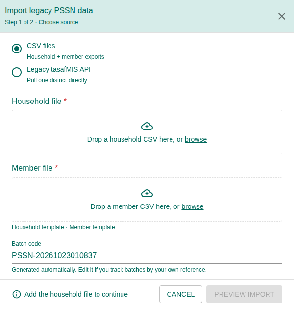
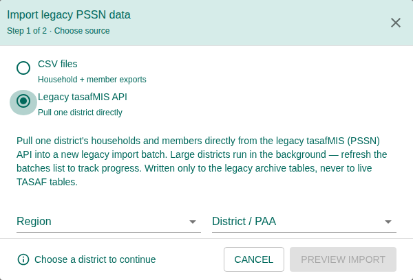
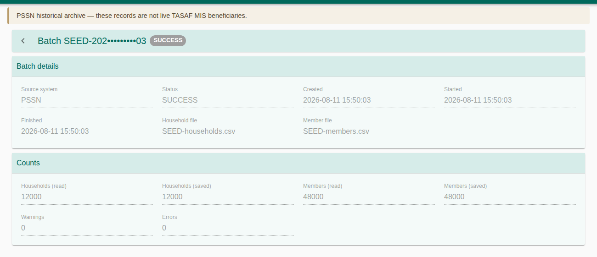
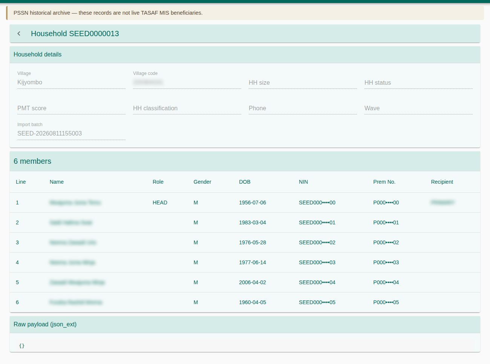

How to bring the PSSN II historical records into TASAF MIS and look them up. The PSSN II registry is an archive: households and members imported from the legacy tasafMIS, kept for reference and comparison. They are not live TASAF MIS beneficiaries and are never written to the live registry tables.
1. Purpose, Roles, and Access
| Right | Grants |
|---|---|
260001 / 260011 | Search PSSN II individuals / households. |
260002–260004 · 260012–260014 | Create / update / delete archive records. |
260021 | Run imports (CSV or API). |
2. Menus and Pages
| Menu | Shows |
|---|---|
| PSSN II Individuals | Every archived person. |
| PSSN II Households | Every archived household with its head, village, PMT score and classification. |
| Legacy Imports | Every import batch, and the button to start a new one. |
Each page carries the banner PSSN historical archive — these records are not live TASAF MIS beneficiaries.
3. Import from CSV Files
- Open Legacy Imports and press + (Import legacy PSSN data).
- Choose CSV files (household + member exports).
- Drop or browse the Household file and the Member file; the two are uploaded together. Household template and Member template show the expected columns. Each file shows its rows and whether the required columns were found.
- Keep or edit the Batch code, which is generated automatically.
- Press Preview import, check the row counts and recognised columns, then import.


4. Import from the Legacy API
- In the same dialog choose Legacy tasafMIS API.
- Choose the Region and District / PAA.
- Leave Dry run ticked and press Dry Run: it fetches and shows the rows, households and members, and imports nothing.
- Untick Dry run and press Start Import. Large districts run in the background.


5. Follow an Import Batch
The Legacy Imports list shows each batch's district or PAA, method (API or CSV), status, households, members, issues and date. Refresh it to follow a running import; open a batch for its counts (read and saved), files and the list of errors and warnings.
| Status | Meaning |
|---|---|
| Pending · In progress | Waiting or running |
| Success | Every record saved |
| Completed with issues | Saved, with warnings or errors listed on the batch |
| Failed | Nothing usable was saved; read the errors |


6. Search Households and Individuals
- Households: filter by household code (REGISTRATIONNO). The household page shows its details (size, status, phone, wave) and its members with role, NIN, Prem No. and the recipient.
- Individuals: filter by first and last name, NIN, Prem No., phone and gender. The person's page shows personal details, disability, facility, the NIDA verification and School Information System data recorded in PSSN II.
Both pages also show the raw record as it came from PSSN II, for checking.


7. Troubleshooting
| Problem | What to do |
|---|---|
| “Missing required column(s)” | Export again with the template's columns. |
| An API import stays In progress | Large districts take time; refresh later. If it stops, start it again for that district. |
| A person is not found in the live Registry | Archive records never enter the live registry; use the Registry module's imports for live data. |